C3 Component Diagram - API Application
แผนภาพ C3 นี้นำเสนอโครงสร้างภายในของ API Application Container FastAPI ซึ่งเป็นศูนย์กลาง Orchestrator ของระบบ Scam Image Detection โดยแสดงให้เห็นถึงการแบ่งเลเยอร์ภายใน
C3: Component Diagram (API Application)
แผนภาพ C3 นี้นำเสนอโครงสร้างภายในของ API Application Container (FastAPI) ซึ่งเป็นศูนย์กลาง (Orchestrator) ของระบบ Scam Image Detection โดยแสดงให้เห็นถึงการแบ่งเลเยอร์ภายใน

ดู Mermaid source
flowchart TB
%% การตั้งค่า Class สีต่างๆ
classDef clientFill fill:#dae8fc,stroke:#6c8ebf,color:black
classDef routerFill fill:#d5e8d4,stroke:#82b366,color:black
classDef serviceFill fill:#fff2cc,stroke:#d6b656,color:black
classDef repoFill fill:#e1d5e7,stroke:#9673a6,color:black
classDef storageFill fill:#ffe6cc,stroke:#d79b00,color:black
classDef extFill fill:#f5f5f5,stroke:#666666,color:black
%% Clients (จาก C2)
MobileApp("Mobile App<br>[Flutter]")
AdminPortal("Admin Portal<br>[React]")
subgraph APIContainer ["API Application Container - FastAPI"]
%% API Layer
subgraph APILayer ["API Layer (Controllers)"]
AuthRouter("Auth Router<br>รับข้อมูล Login/Register")
AdminRouter("Admin Router<br>จัดการระบบสำหรับ Admin")
ScanRouter("Scan Router<br>รับรูปภาพเพื่อตรวจสอบ")
ReportRouter("Report Router<br>รับรายงานภาพสแกม")
end
%% Business Logic Layer
subgraph ServiceLayer ["Business Logic Layer (Services)"]
AuthService("Auth Service<br>ออก Token และตรวจสอบสิทธิ์")
AdminService("Admin Service<br>ประมวลผลคำสั่ง Admin")
ScanService("Scan Service<br>Core Logic คำนวณความเสี่ยง")
InferenceClient("Inference Coordinator<br>จัดการคิวและการเรียก AI")
ReportService("Report Service<br>ประมวลผลการรายงาน")
end
%% Data Access Layer
subgraph RepoLayer ["Data Access Layer (Repositories)"]
UserRepo("User Repository")
ScanRepo("Scan Repository")
ReportRepo("Report Repository")
end
end
%% Storage & Externals (จาก C2)
Cache("Redis Cache")
MainDB[("PostgreSQL Database")]
ObjectStore("Cloud Storage (Local / S3)")
AIWorker("ONNX Worker (Subprocess)")
%% Relationships - External to API
MobileApp --->|HTTPS / JSON| AuthRouter
MobileApp --->|HTTPS / Multipart| ScanRouter
MobileApp --->|HTTPS / JSON| ReportRouter
AdminPortal --->|HTTPS / JSON| AdminRouter
AdminPortal --->|HTTPS / JSON| AuthRouter
%% API to Services
AuthRouter --->|เรียกใช้งาน| AuthService
ScanRouter --->|มอบหมายงานตรวจสอบ| ScanService
ReportRouter --->|มอบหมายงานรายงาน| ReportService
AdminRouter --->|มอบหมายคำสั่ง| AdminService
%% Services to Services
ScanService --->|ส่งภาพให้ AI วิเคราะห์| InferenceClient
AdminService -.->|ดูข้อมูล| ReportService
%% Services to External/Cache
ScanService --->|ตรวจสอบ Hit/Miss| Cache
ScanService --->|จัดเก็บรูปต้นฉบับ| ObjectStore
InferenceClient --->|subprocess IPC ภายใน Backend| AIWorker
AIWorker --->|คืนผลลัพธ์ Heatmap| ObjectStore
%% Services to Repositories
AuthService --->|ค้นหา/ตรวจสอบ User| UserRepo
ScanService --->|บันทึกผลการสแกน| ScanRepo
ReportService --->|บันทึกและดึงรายงาน| ReportRepo
AdminService --->|ดึงข้อมูลเชิงสถิติ| ScanRepo
AdminService --->|จัดการบัญชีผู้ใช้| UserRepo
%% Repositories to DB
UserRepo --->|SQLAlchemy| MainDB
ScanRepo --->|SQLAlchemy| MainDB
ReportRepo --->|SQLAlchemy| MainDB
%% Apply Styles
class MobileApp,AdminPortal clientFill
class AuthRouter,ScanRouter,ReportRouter,AdminRouter routerFill
class AuthService,ScanService,ReportService,AdminService,InferenceClient serviceFill
class UserRepo,ScanRepo,ReportRepo repoFill
class Cache,MainDB,ObjectStore storageFill
class AIWorker extFill
คำอธิบายองค์ประกอบภายใน (Component Details)
สถาปัตยกรรมภายในของ Backend ยึดหลักการ Layered Architecture เพื่อแยกส่วนหน้าที่ (Separation of Concerns) ทำให้โค้ดอ่านง่าย ทดสอบง่าย (Testable) และดูแลรักษาง่าย โดยแบ่งเป็น 3 เลเยอร์หลัก:
1. API Layer (Controllers)
ทำหน้าที่เป็นด่านหน้าในการรับ HTTP Request, ตรวจสอบความถูกต้องของข้อมูลเบื้องต้นผ่าน Schemas และส่งต่องานไปยัง Service ที่เกี่ยวข้อง
- Auth Router: จัดการ Endpoint สำหรับ Login และ Register
- Scan Router: รับไฟล์รูปภาพแบบ Multipart Form Data สำหรับตรวจสอบสแกม
- Report Router: รับแจ้งรูปภาพหลอกลวงจากผู้ใช้ (Crowdsourcing)
- Admin Router: เปิด Endpoint ให้นักวิจัยและ Admin จัดการข้อมูลโมเดลและระบบ
2. Business Logic Layer (Services)
เป็นหัวใจหลักของแอปพลิเคชัน ทำหน้าที่ประมวลผลตามกฎทางธุรกิจ
- Scan Service: ควบคุมขั้นตอนการตรวจสอบภาพทั้งหมด เริ่มตั้งแต่เช็ค Cache, สกัด EXIF (แสดงผลเท่านั้น ไม่ร่วมคำนวณ), และคำนวณ Overall Risk Score ตามสูตร Hybrid Worst-Case
- Inference Coordinator: ตัวประสานงานระหว่าง Backend กับ AI Model ทำหน้าที่จัดคิวรูปภาพและส่งคำสั่งข้าม Process ไปให้ Worker
- Auth Service: จัดการการเข้ารหัสผ่าน (Hashing) และออก JWT Token
3. Data Access Layer (Repositories)
ทำหน้าที่ติดต่อกับฐานข้อมูลหลัก ช่วยให้ Business Logic Layer ไม่ต้องเขียนคำสั่ง SQL
- User Repository: Query ข้อมูลบัญชีและสิทธิ์ของผู้ใช้งาน
- Scan Repository: บันทึกและดึงประวัติ Risk Score ของแต่ละรูปภาพ
- Report Repository: บันทึกข้อมูลที่ผู้ใช้แจ้งเข้ามาว่ารูปไหนเป็นสแกมของจริง
การทำงานร่วมกับ AI (ONNX Worker)
โมเดล AI ถูกออกแบบให้ทำงานแยกส่วนจาก Web Server หลัก โดยรันผ่าน subprocess เพื่อแยกภาระงานประมวลผลที่กินทรัพยากรสูงออกจากงานหลักของ FastAPI ทำให้ API ยังคงสามารถตอบสนอง Request อื่นๆ ได้อย่างรวดเร็วและไม่สะดุด